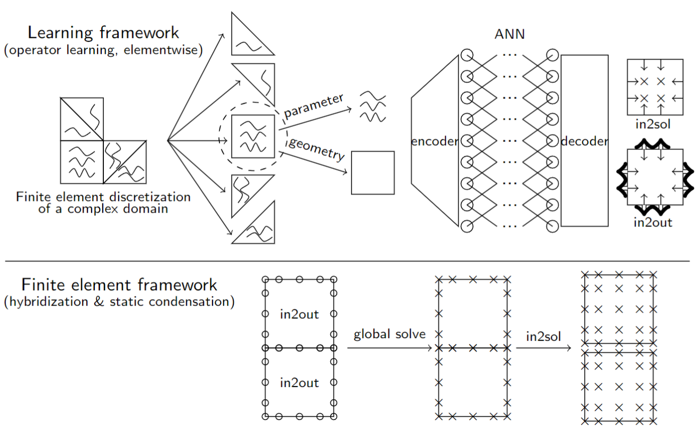
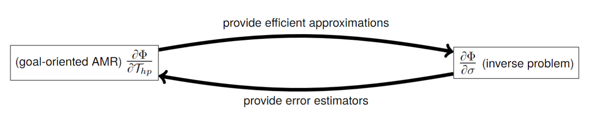
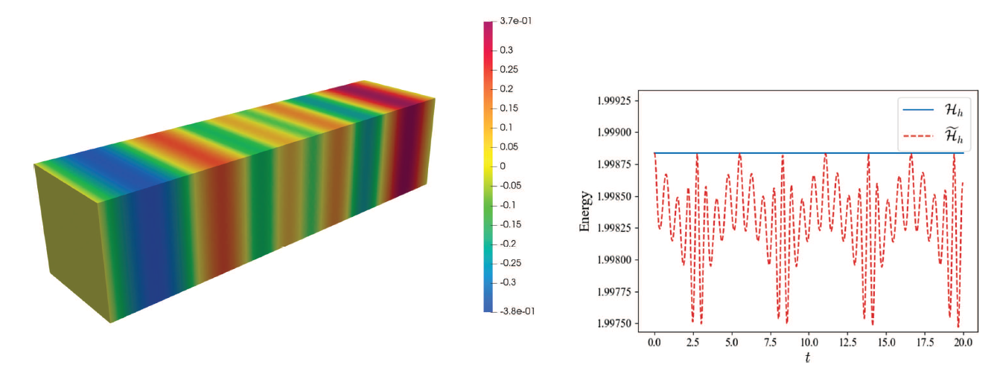
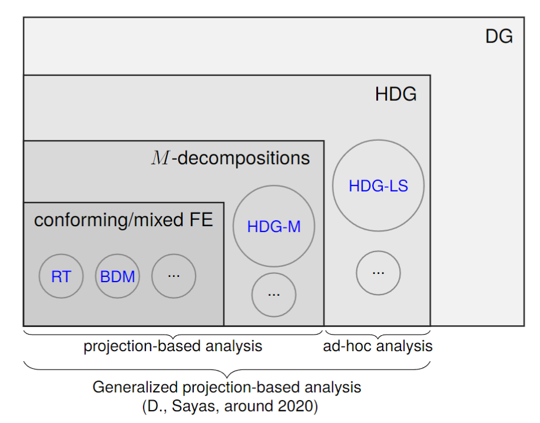
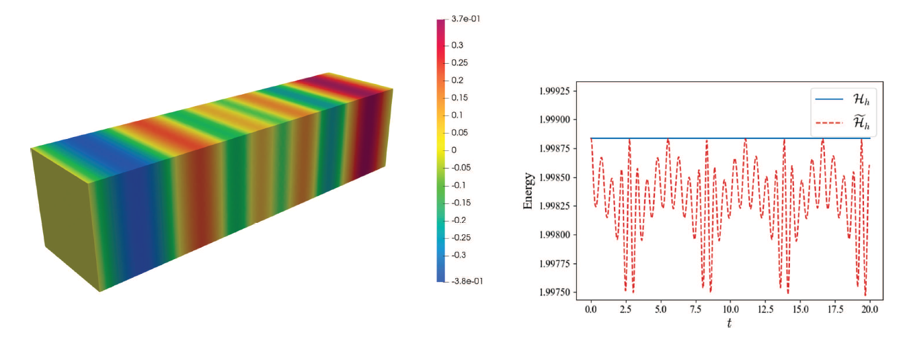
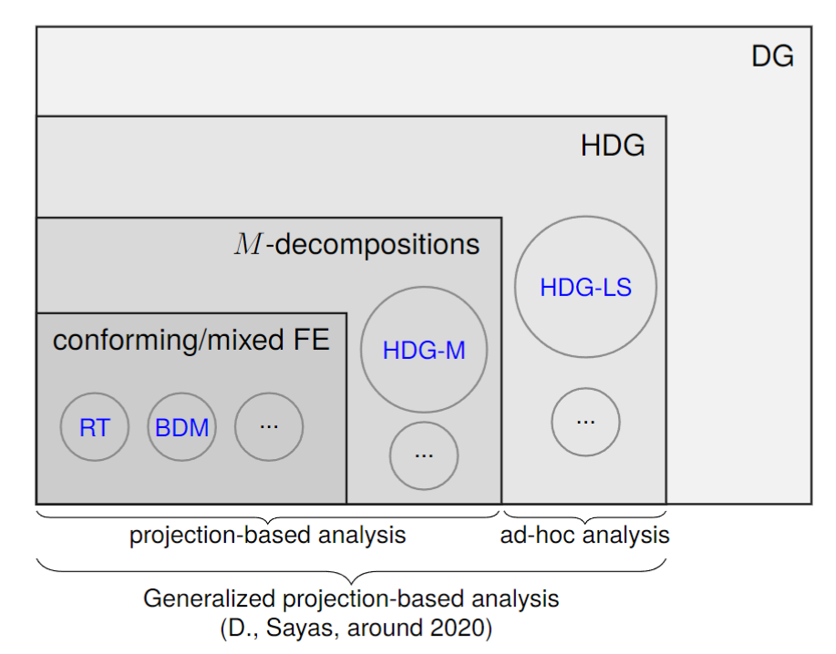

Research
Full publication list: see publications
Selected research highlights:
Element learning: a systematic approach of accelerating finite element-type methods via machine learning

- S. Du, and S. N. Stechmann.
Element learning: a systematic approach of accelerating finite element-type methods via machine learning, with applications to radiative transfer.
arXiv:2308.02467
Adaptive-mesh inversion: a goal-oriented hp-adaptive mesh refinement method for solving inverse radiative transfer problems

- S. Du, and S. N. Stechmann. Inverse radiative transfer with goal-oriented hp-adaptive mesh refinement: adaptive-mesh inversion.
Inverse Probl. 39 (2023), no. 11.
DOI: 10.1088/1361-6420/acf785
- S. Du, and S. N. Stechmann. Fast, low-memory numerical methods for radiative transfer via hp-adaptive mesh refinement.
J. Comput. Phys. 480 (2023).
DOI: 10.1016/j.jcp.2023.112021
Symplectic Hamiltonian finite element methods for electromagnetics

- B. Cockburn, S. Du, and M. A. Sánchez. A priori error analysis of new semidiscrete, Hamiltonian HDG methods for the time-dependent Maxwell's equations.
ESAIM: M2AN, 57 (2023), no.4, 2097 – 2129.
DOI: 10.1051/m2an/2023048
- B. Cockburn, S. Du, and M. A. Sánchez. Combining finite element space-discretization with symplectic time-marching schemes for linear hamiltonian systems.
Front. Appl. Math. Stat. 9 (2023).
DOI: 10.3389/fams.2023.1165371
- M. A. Sánchez, S. Du, B. Cockburn, N.-C. Nguyen, J. Peraire. Symplectic Hamiltonian finite element methods for electromagnetics.
Comput. Methods Appl. Mech. Engrg. 396 (2022).
DOI: 10.1016/j.cma.2022.114969
- B. Cockburn, M. A. Sánchez, S. Du. Discontinuous Galerkin methods with time-operators in their numerical traces for time-dependent electromagnetics.
Comput. Meth. Appl. Math. 22 (2022), no. 4, 775-796.
DOI: 10.1515/cmam-2021-0215
Generalized projection-based analysis of hybridizable discontinuous Galerkin methods

- B. Cockburn, S. Du, and M. A. Sánchez. A priori error analysis of new semidiscrete, Hamiltonian HDG methods for the time-dependent Maxwell's equations.
ESAIM: M2AN, 57 (2023), no.4, 2097 – 2129.
DOI: 10.1051/m2an/2023048
- S. Du, and F.-J. Sayas. A note on devising HDG+ projections on polyhedral elements.
Math. Comp. 90 (2021), 65-79.
DOI: 10.1090/mcom/3573
- S. Du, and F.-J. Sayas. A unified error analysis of hybridizable discontinuous Galerkin methods for the static Maxwell equations.
SIAM J. Numer. Anal. 58 (2020), no. 2, 1367–1391.
DOI: 10.1137/19M1290966
- S. Du, and F.-J. Sayas. New analytical tools for HDG in elasticity, with applications to elastodynamics.
Math. Comp. 89 (2020), 1745-1782.
DOI: 10.1090/mcom/3499
- S. Du, and S. N. Stechmann. Inverse radiative transfer with goal-oriented hp-adaptive mesh refinement: adaptive-mesh inversion.
Inverse Probl. 39 (2023), no. 11. DOI: 10.1088/1361-6420/acf785 - S. Du, and S. N. Stechmann. Fast, low-memory numerical methods for radiative transfer via hp-adaptive mesh refinement.
J. Comput. Phys. 480 (2023). DOI: 10.1016/j.jcp.2023.112021
Symplectic Hamiltonian finite element methods for electromagnetics

- B. Cockburn, S. Du, and M. A. Sánchez. A priori error analysis of new semidiscrete, Hamiltonian HDG methods for the time-dependent Maxwell's equations.
ESAIM: M2AN, 57 (2023), no.4, 2097 – 2129.
DOI: 10.1051/m2an/2023048
- B. Cockburn, S. Du, and M. A. Sánchez. Combining finite element space-discretization with symplectic time-marching schemes for linear hamiltonian systems.
Front. Appl. Math. Stat. 9 (2023).
DOI: 10.3389/fams.2023.1165371
- M. A. Sánchez, S. Du, B. Cockburn, N.-C. Nguyen, J. Peraire. Symplectic Hamiltonian finite element methods for electromagnetics.
Comput. Methods Appl. Mech. Engrg. 396 (2022).
DOI: 10.1016/j.cma.2022.114969
- B. Cockburn, M. A. Sánchez, S. Du. Discontinuous Galerkin methods with time-operators in their numerical traces for time-dependent electromagnetics.
Comput. Meth. Appl. Math. 22 (2022), no. 4, 775-796.
DOI: 10.1515/cmam-2021-0215
Generalized projection-based analysis of hybridizable discontinuous Galerkin methods

- B. Cockburn, S. Du, and M. A. Sánchez. A priori error analysis of new semidiscrete, Hamiltonian HDG methods for the time-dependent Maxwell's equations.
ESAIM: M2AN, 57 (2023), no.4, 2097 – 2129.
DOI: 10.1051/m2an/2023048
- S. Du, and F.-J. Sayas. A note on devising HDG+ projections on polyhedral elements.
Math. Comp. 90 (2021), 65-79.
DOI: 10.1090/mcom/3573
- S. Du, and F.-J. Sayas. A unified error analysis of hybridizable discontinuous Galerkin methods for the static Maxwell equations.
SIAM J. Numer. Anal. 58 (2020), no. 2, 1367–1391.
DOI: 10.1137/19M1290966
- S. Du, and F.-J. Sayas. New analytical tools for HDG in elasticity, with applications to elastodynamics.
Math. Comp. 89 (2020), 1745-1782.
DOI: 10.1090/mcom/3499
ESAIM: M2AN, 57 (2023), no.4, 2097 – 2129. DOI: 10.1051/m2an/2023048
Front. Appl. Math. Stat. 9 (2023). DOI: 10.3389/fams.2023.1165371
Comput. Methods Appl. Mech. Engrg. 396 (2022). DOI: 10.1016/j.cma.2022.114969
Comput. Meth. Appl. Math. 22 (2022), no. 4, 775-796. DOI: 10.1515/cmam-2021-0215
- B. Cockburn, S. Du, and M. A. Sánchez. A priori error analysis of new semidiscrete, Hamiltonian HDG methods for the time-dependent Maxwell's equations.
ESAIM: M2AN, 57 (2023), no.4, 2097 – 2129. DOI: 10.1051/m2an/2023048 - S. Du, and F.-J. Sayas. A note on devising HDG+ projections on polyhedral elements.
Math. Comp. 90 (2021), 65-79. DOI: 10.1090/mcom/3573 - S. Du, and F.-J. Sayas. A unified error analysis of hybridizable discontinuous Galerkin methods for the static Maxwell equations.
SIAM J. Numer. Anal. 58 (2020), no. 2, 1367–1391. DOI: 10.1137/19M1290966 - S. Du, and F.-J. Sayas. New analytical tools for HDG in elasticity, with applications to elastodynamics.
Math. Comp. 89 (2020), 1745-1782. DOI: 10.1090/mcom/3499